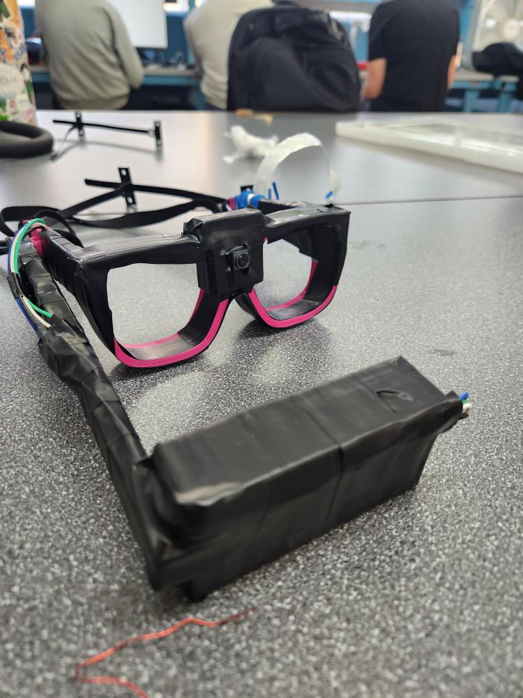

Figure 3: Isometric View

Introduction:
The goal of the Hermes Lens is to simplify language translation by using a wearable pair of glasses that can take in outside text and translate it to your preferred language. Language barriers, although less common now, are still a major issue in modern society. For example, immigrants to the US who do not speak English may have trouble navigating public transportation or even finding where to eat—or even worse, reading a menu.
Figure 4: Top View
Figure 3: Isometric View
Figure 2: Front View
Figure 1: Right View
Physical Construction:
The design incorporates three major electronic components—a Raspberry Pi Zero, a camera, and an LCD screen. The screen is housed in a small arm to the right side of the glasses lens while the Raspberry Pi Zero and camera are both housed on the frame itself. The frames need to be comfortable enough for daily use while still looking “presentable”. The design of the screening arm is important as well; the bar must stay upright at all times unless the user lowers it—which should be an effortless task for the wearer. We have not come up with a latching mechanism for the arm yet, but something with a releasable latch is being considered. Furthermore, the LCD screen housing will be on a swivel joint to allow it to stay in its vertical orientation while it lowers in front of the user. This system has not yet been incorporated into the design. Figures 1-4 show different angles of the CAD model. The materials have not come in yet and the circuit hasn’t been wired so the true space of all the parts isn’t determined. If the electronics can fit inside the hollow housing of the frames, they will run through it. If the Pi Zero is too large, a mount will be constructed and it will most likely be placed on the left side of the frames to balance out the weight of the lift arm. The weight of the design is considered for the earlier point of comfort and daily use; the most important factor of this is the balanced weight distribution, which will be hard to accomplish. The battery will most likely be mounted to the left side as well for this purpose. The design will be 3D printed as this offers many options for customization in our design. Early prototyped designs will be tested for comfort and structural integrity—there will be some give and take finding an adequate balance between the two. Dimensions of the 3D model may change slightly as the materials arrive; if part of the frame needs to be an inch larger to house the screen properly for example. Ideally, the camera will be wired through the frame and placed in the center of the frame bridge. Not only would the best orientation to model the path of the eyes, it would also be the most appealing design from its symmetry. Figure 5 displays the circuitry of our design; this includes the wires and potentiometer as well as the two sensors we will be using along with the Raspberry Pi.
Figure 5: Circuit Diagram
Figure 6: Code Layout
Software Setup:
In order for our product to be successful and function it will need to have a switch that turns it on and off. When the switch is on, the Pi camera turns on and goes through its setup. It begins to detect the text via OpenCV and then places that text through a translation algorithm with the use of tesseract. The final translated text is displayed on an LCD screen. This project will be using a Raspberry Pi Zero. We chose this for various reasons; the main one being that it is small and can fit in our design. The project is taking in data from the text in scans using a Pi camera. Using a Pi camera would be the most efficient way to capture text and then translate it. We have sample code from a library called py-tesseract which we will use when taking the text from the Pi camera and using it to translate the text into a specific language. The process of code can be demonstrated using Figure 6.
Conclusion:
Throughout the project, we expect to go through various technical hurdles ranging from the code not working as expected with another sensor to our hardware not communicating with each other. We expect to solve these problems by attending open lab sessions during the week and on weekends and being in contact with our RAD mentor. It may also be difficult to construct a sturdy frame to fit our parts. A compromise will need to be made between structural integrity and design. Although the coding process is time-consuming and the housing is difficult to construct, the project seems very feasible; the only purchase so far is the $13.99 Pi Camera. There are no other planned purchases as of now so we are well within the $100 budget.
Final Product:
